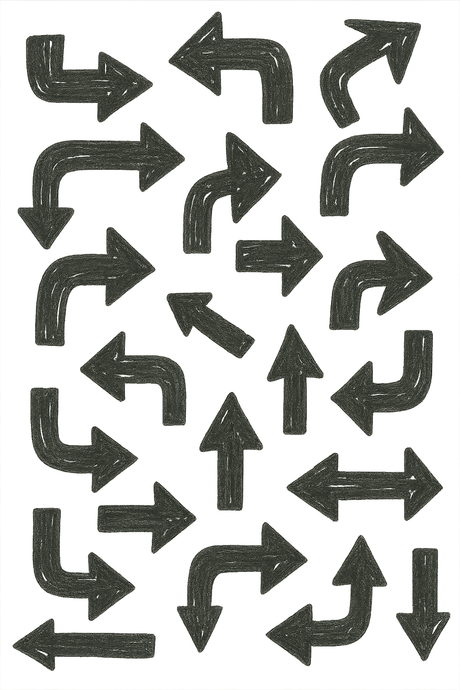
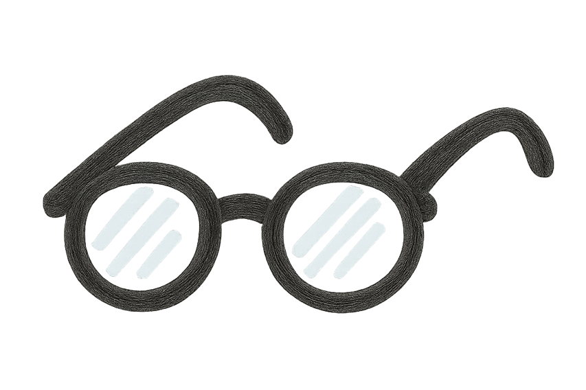

The best use of metrics
The most valuable use of metrics is to 1) create a shared understanding of reality and 2) generate constructive conversation.
Do this by identifying key metrics, relentlessly revisiting them, and using them as a starting point for discussion.
What is real?
First, let’s talk about why creating a shared understanding of reality is an objective worth focusing on. Does everyone in your organization have the same view of how the company is doing, and where the successes and challenges are? Assume no. The default state of affairs is that everyone has a different perspective, each of which is wrong in some way. This inherently leads to out-of-sync decision making, as people make reasonable choices based on different understandings of reality. (For more on this, I recommend this article by Benn Stancil.)
There are several reasons why it’s so hard to have an accurate, shared view of reality.

It’s impossible to overcommunicate
Even in the unlikely case that members of an executive team have a common understanding of where things stand, it’s almost certainly true that individual contributors do not. This is partly due to communication from executives outward. While leaders are immersed in thinking about the big picture and adapting longer term plans, everyone else is focused on the details of the day to day. An executive may have had five meetings about something, and it’s inherently informing their thinking. They may not even recognize that it hasn’t been communicated to the rest of the organization – or perhaps it has, but without people fully absorbing it. It’s very common for leaders to think they’ve clearly explained something when the actual level of understanding is little to none.
It’s easy to get out of touch
While company leaders are well informed about some aspects of a company’s situation, they are often out of touch with the day to day realities. This is natural, as they’re focused on a different set of activities. However, it often leads to a disconnect on critical issues. This can happen between executives and individual contributors within organizations, and also between entire companies and their customers. Sometimes a single experience can suddenly make this clear. For example, in 2023 Jim Farley, the CEO of Ford, took the EV version of the F-150, the Ford Lightning, on a road trip, where he quickly adjusted his view of reality.
Persuasion seeps in
There are many ways metrics are used in organizations, particularly to evaluate company and individual performance. In these cases there is an inherent bias towards making things look good. Whether it’s the CEO pitching the company to investors, the marketing team making a case to customers, executives updating employees, or individuals maximizing metrics tied to their compensation, there are incentives to present the most optimistic version of reality. The problem is that this optimistic version tends to become the main understanding, often without anyone even realizing it.
How to solve this
Using metrics well is like giving everyone in your organization glasses that suddenly make things clear. To do this, you to carefully select metrics and make them precise, keep returning to them repeatedly over time, and approach them with the goal of understanding and problem solving, rather than using them for positive messaging.

Design and codify
First, decide what elements of your strategy or operations are more critical to represent in metrics. There are probably many; start with just a handful and expand over time. It’s much better to get this process up and running successfully with three metrics that everyone truly understands, remembers, and can talk about, than to have a comprehensive set that leaves people behind.
Once you decide what your first metrics will be, you need to really precisely define them. Try to do this in words, then have someone who works with data try to do it with code (such as SQL, R, or python). Or if you don’t have such a person, implement a calculation from data to the metric in a spreadsheet. The important thing here is that you start with a standardized set of “raw” data that is updated regularly, and includes the information needed to calculate your metrics. For example, at EvE Bio, we record every assay that enters the assay development process, metadata about the assay type, the date when development started, the protocol number that results, the date the protocol was approved, a checkbox for assays that did not result in a protocol, and a standardized set of reasons for this. From this we can calculate things like protocols published per week, average time in assay development by assay type, assay development success rate, etc. When we look at these metrics, we don’t ask someone to provide a number, we have it automatically calculated with code directly from the same dataset every time.
This might seem overly rigid especially if your metrics aren’t that hard to calculate. The reason you should still do this with code is that it forces everyone to agree on a single, precise definition of the metric that is consistent over time, and a single version of the data the metric is based on that is also consistent over time. It is very often the case that people verbally agree on a metric to track, but that when someone tries to implement its calculation in code, many specific questions arise. Being forced to work through these up front avoids common problems in which what seem like the same metrics are calculated differently by different people (or even the same person) over time, which immediately makes them less useful. There is no room for hand waving in code.
Note: It’s certainly not the case that all important things can be reduced to numbers. However, metrics provide a concrete anchor for our understanding of reality, so it’s a good place to start. More qualitative information can fill in the picture around the numbers, and tightly coupled quantitative measurement and qualitative research is a powerful combination.
Relentlessly circle back
Once you have a small set of key metrics that are precisely and automatically calculated, your task is to return to them relentlessly. Continuing to look at the same numbers over time is often the obvious goal, but is easy to stray from. It can seem pedantic, but repetition is necessary to establish things in people’s thinking. I once worked at a startup where someone was selected at every company meeting to read our mission and our strategy. Sometimes this felt a bit silly, but it was effective. Don’t worry about overcommunicating, it’s virtually impossible to do.
The most common reason I’ve seen metrics fade from ongoing review is when things aren’t going as well as expected. Leaders get nervous about calling attention to problems, often because of concerns about damaging morale. However, employees generally pick up on this, and it’s more empowering to have an opportunity to be part of a solution than to be “protected” from bad news.
Value problem solving over messaging
The goal of developing a shared understanding of reality is to take effective action. This means facing things head on, both good and bad, rather than trying to change the messaging to reassure everyone about the current situation. If the metrics indicate that reality is not what you hoped, it’s an opportunity to engage everyone in the problem solving process to get back on track or change course.